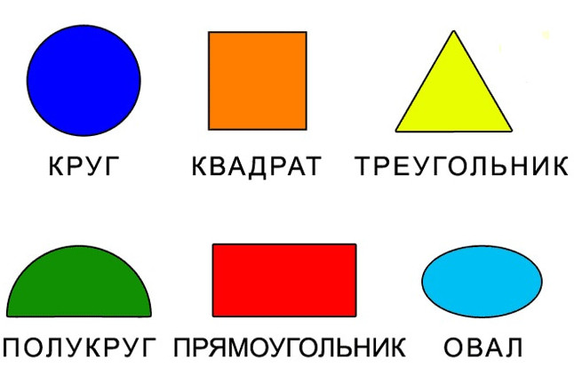

Каждый элемент определяет активные области изображения, которые являются ссылками. Рисунок с привязанными к нему активными областями называется в совокупности картой-изображением. Такая карта по внешнему виду ничем не отличается от обычного изображения, но при этом оно может быть разбито на невидимые зоны разной формы, где каждая из областей служит ссылкой. Тег area задает форму области, ее размеры, устанавливает адрес документа, на который следует сделать ссылку, а также имя окна или фрейма, куда браузер будет загружать документ. Этот тег всегда располагается в контейнере map, который связывает координаты областей с изображением.
Несколько областей могут перекрывать друг друга, сверху будет та, которая в коде HTML располагается выше.
map
area href="URL"
/map
Пример
